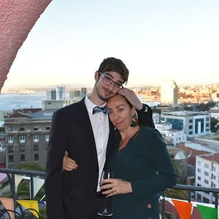

Curriculum Vitae

Detalles Personales
- Nombre: Patricio Aros Diaz
- Correo Electrónico: parosd21@gmail.com
- Teléfono: +569*********
- Dirección: Froilan Ortega Molina
Resumen.
Apasionado y comprometido profesional con habilidades interpersonales sólidas y una actitud
proactiva hacia el trabajo en equipo y el desarrollo personal. Poseo una sólida base en Pedagogia en Educacion Fisica,
respaldada por una comunicación clara y efectiva, empatía, y capacidad para adaptarme a entornos cambiantes.
Busco constantemente mejorar y crecer tanto a nivel personal como profesional, y tengo un enfoque orientado
a resultados en todas mis actividades.
Habilidades
- Excelentes habilidades de comunicación verbal y escrita.
- Capacidad para trabajar en equipo y colaborar con personas de diferentes ámbitos y culturas.
- Empatía y capacidad para comprender las necesidades y preocupaciones de los demás.
- Fuertes habilidades de resolución de problemas y pensamiento crítico.
- Motivación y pasión por el aprendizaje continuo y el crecimiento personal.
Formacion
- Pedagogia en Educacion Fisica
- Diplomado en inclusion y diversidad
- Magister en neurociencia y emociones aplicadas
- Boodcamp Desafio Latam
Proyectos
- Finalizar Desafio Latam y trabajar de Full Stack
- Especializarme en un Area de Data science
- Formar un equipo de trabajo para un Proyecto propio
- Portafolio
Redes sociales
- linkedin
- Facebook
- Instagram